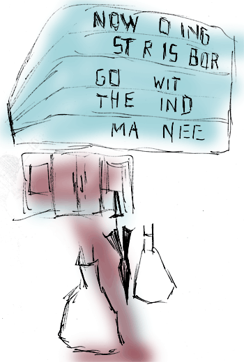

After Van Gogh’s Café Terrace at Night
by Sam Byfield
In the final moments of the world
a waiter takes a woman’s order,
and she thinks how he looks like
Jesus, or a ghost. Two chairs stare
into empty space and violin brushes
all the corners of the terrace.
–
In the final moments of the world
a figure slinks down an alleyway,
driven by hungers and inarticulate desires.
He watches people, their gowns
and the darknesses they harbour,
fights with things that were once memories.
–
In the final moments of the world
two men close the curtains, undress.
One runs his hands through the other’s
chest hair, lowers mouth to nipple.
Small remnant light catches
the gold and pulse of flesh.
–
In the final moments of the world
a couple emerge from the cinema,
regal and in love. They discuss
small matters of script and cast.
The woman looks to the sky and says
Darling, all the stars are exploding.

 |
|